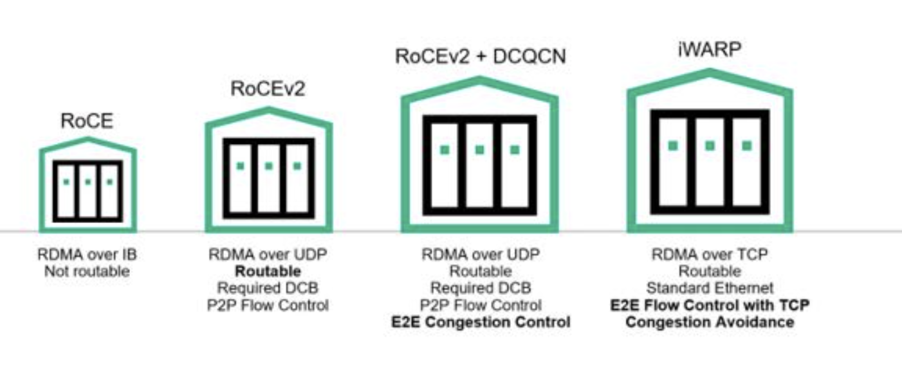
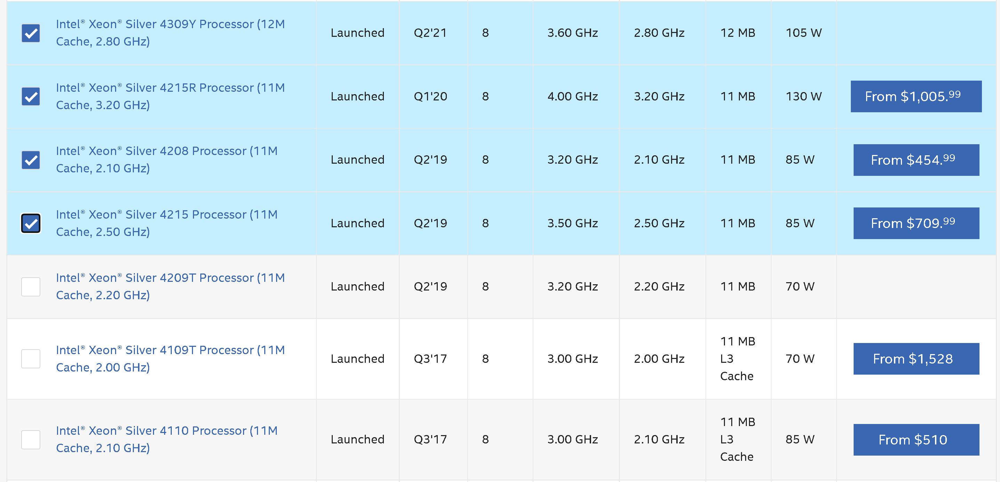
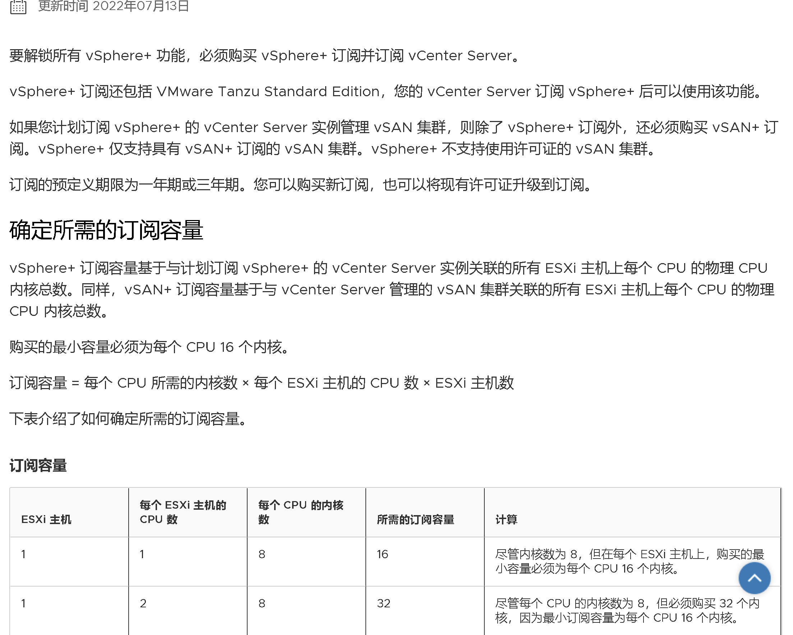

不是一个人，而是很多朋友在了解HCI产品后，会觉得AzureStack HCI的价格很高，难落地。
有时候感觉是不太准的，所以我们来详细818 Azure Stack HCI的计费方式，以及这个东西的影响。为了详细的分析，这个事情要分两个方面讨论
- 跟谁比
- 怎么用
通过计算，我也希望找到触碰到Azure Statck HCI 底线的配置。底线顾名思义，就是到头了，不能再省钱了，再省钱就影响功能了。
Azure Stack HCI的计费方式
超融合基础架构（Hyper-converged infrastructure，缩写为HCI）是SDX（软件定义一切）时期的附加产物，其特点是计算、存储、网络的提供能力是等比、线性提升的，什么意思？拿挖矿来类比，就是1个节点算力为1，两个节点就是2，没有损耗。简单并且易于使用。用户可以根据实际需求，往群集增加节点，来实现整体群集运算能力的提升。
所以它背后隐藏了一些高级功能的说明，比如分布式存储、网络虚拟化、计算虚拟化、管理平台，当然还有针对本身平台的高可用属性。所以HCI是一种一揽子工程，是一种相对高级的实现方式，是对纯虚拟化产品的一种升级。
Azure Stack HCI的计费方式简单粗暴，按照用量计费。
- 从Azure账户中合并计费
- 每个物理主机按照1核心
10美元收取月租
除了这个费用，再没有其他的了。和传统虚拟化一哥VMWare的针对虚拟化和VSAN单独计费、并且有最低16物理核低消相比，灵活性和价格都是占优的。
以一台 机器两颗16核的Intel® Xeon® Gold 6326 )， 汇率6.86来算，一年的许可证费用无折扣是16*2*6.86*10*12=26343，这个价格不过不失，属于正常授权的价格，如果公司有Azure的折扣，那么这个折扣也可以映射到这里。
选什么CPU？
Intel的CPU细节我们可以参考 Intel Ark 。
选择CPU其实很简单，注意几个指标就可以了：
- 发布时间：俗话说买新不买旧
- 功耗：同技术代差，理论上功耗越高性能越好。毕竟服务器不图省电
- 价格：这个没什么可说的，量力而行。
- 核心数：至少8核（后面会解释为什么）
有的朋友说，我想AMD yes行不行？只能说一半一半，CPU的选型远不止总算力这么简单。
比如AMD官网宣传的产品对比，AMD用多出的24个核心，跑出来比Intel更好的成绩，并且提供了更低的价格（接近3000美元）。但是依然要说，单核性能上，Intel还是大哥。
| CPU | 价格 | 核心 |
|---|---|---|
| AMD EPYC 7763 | $5,599.00 USD (2022-08-23) | 64C |
| Intel® Xeon® Platinum 8380 | $8,978.00 USD (2022-04-03) | 40C |
回到授权（正版授权）上，无论微软还是VMWare，都是以CPU核心数来授权，因此AMD的这种架构就比较吃亏了。以那多出来的24个核心来计，每年正版授权支出需要多24*2*10*12=5760美元，买CPU省下来的钱一年就干秃噜了。
单纯的分布式存储架构
HCI既然是软件定义的计算，软件定义的存储，软件定义的网络，那这些东西能不能拆开用呢？答案是肯定的。 那就是用HCI做超融合存储。
是的，就是单纯的存储，不使用网络虚拟化功能。因为HCI有完整的Iscsi和SOFS功能，且可以在群集模式下提供服务，并且不限定存储的连接放。作为传统企业，这其实也有比较大的应用市场。那么它的直接对手，就是VSAN
这里为了最大化成本优势，需要依据授权方式，计算最合理的CPU选型。
对于HCI的CPU选型，其实有一个最低的底线，那就是CPU性能至少要保证分布式存储S2D能够正常工作。那怎么算正常工作呢，首先需要保证网卡的对内对外通信没有问题。
为了降低网络对CPU的影响，出现了一种网卡专有技术，叫做RDMA，我们不去细聊RDMA是什么，只需要知道，买的网卡上有这项功能，那么同样支持RDMA的网卡之间通信，就可以享受到低延迟，低CPU占用的特性。
HCI的部署，一般我们推荐使用iwarp,这单纯就是因为省事儿，部署简单。ROCE需要更多经验丰富的人去配置，以及需要底层硬件的支持，所以并不适合中小规模的部署。
作为两种芯片都生产的Marvell，它发布了两者的对比差异。相对来说，观点比较中立，可供阅读。RoCE 或 iWARP 的低延迟？- Marvell博客

问题来了，既然RDMA可以极大降低CPU的利用率，那CPU岂不是随便买都都可以？这个时候要注意了，RDMA只会对同样开启RDMA的对端设备生效，也就是RDMA只是在自己的范围内生效，在HCI的场景中，就是HCI内部的分布式存储S2D通信，才会用到RDMA，如果和HCI以外的机器通信，就回到传统网络中来，没有RDMA可用了。
虽然Intel最低端的CPU是 Intel® Xeon® Silver 4112 Processor )，但作为HCI的CPU选型，我们无论如何是不能选它的。
它仅仅只有4个核心，连10G的带宽都跑不满（ 【网络实验】10G网络下的真实带宽——CPU负载与网卡TSO、GSO）。
单个CPU核心只能支撑接近2.5G的网卡流量，分配5个核心才可以跑满10G。这种配置下，选配一个高主频，核心少的CPU才能满足接近20G的流量需求。
20G这个标准怎么来的？这是因为多数情况，我们都会至少购买一张双网口，单口10G的卡。如果卡的规格提升，那么CPU的规格也要同比提升。
所以说，8核是Azure Stack HCI的底线，一台主机不能少于8核，要不就会极大影响性能的发挥了。至于选什么，还是依照上面给出的建议，选择价格合适，主频够高的产品。

分布式存储的整个群集计费
单纯以分布式存储而言，AzureStack HCI拥有无与伦比的价格优势。
以一个群集3个节点，每个节点配备一颗8核的CPU来计算，一年只需要 8*3*6.86*10*12=19,756，还没有突破2万大关。这个价格对企业级的商业分布式存储用户而言，不能说贵到天际，只能说是基本白送。
超融合架构
如果需要很好的利用超融合架构的计算功能，那么除了每个节点预留8核之外，其他的资源都可以用来做计算能力的输出。这种计费没有低消，也只需要根据用量付费，销毁主机后即停止计费。
VMWare收费方式
了解一下友商的定价方式，就知道Azure Stack HCI处于什么级别。VMware购买订阅

网卡选择
知乎有一位朋友分享了现在主流网卡对RDMA的支持，方便大家了解和选购。19. RDMA之iWARP & Soft-iWARP - 知乎 (zhihu.com)
网卡的选择只是一个简单的二选一，iwarp或者ROCE。
这些驱动程序所属的厂家（括号外的公司被括号内的公司收购或者为其子公司）如下：
驱动名 厂商 Infiniband RoCE v2 iWARP 备注 bnxt_re Broadcom √ cxgb4 Chelsio √ efa Amazon 自成一派，使用自研的SRD协议，也支持UD。 hfi1 Cornelis 使用Omni-Path协议，从Intel拆分出来的公司。 hns HiSilicon(Huawei) √ irdma Intel √ √ mlx4 Mellanox(NVIDIA) √ √ mlx5 Mellanox(NVIDIA) √ √ mthca Mellanox(NVIDIA) √ ocrdma Emulex(Broadcom) 只支持RoCEv1，很久没更新了。 qedr QLogic(Marvell) √ √ Qlogic非IB部分最终被Marvell收购 qib Qlogic(Intel) √ Qlogic的IB技术被Intel收购 usnic Cisio 私有协议 vmw_pvrdma VMware √
Azure Stack HCI支持功能列表
HCI的的支持特性如下所示，列出来的功能都是允许在HCI系统中安装和使用的。比如我们给节点安装SOFS和ISCSI功能，只需要行命令即可。
1
2
icm 节点名称{Install-WindowsFeature FS-FileServer -IncludeAllSubFeature -IncludeManagementTools}
icm 节点名称{Install-WindowsFeature FS-iSCSITarget-Server -IncludeAllSubFeature -IncludeManagementTools}
1
2
3
4
5
6
7
8
9
10
11
12
13
14
15
16
17
18
19
20
21
22
23
24
25
26
27
28
29
30
31
32
33
34
35
36
37
38
39
40
41
42
43
44
45
46
47
48
49
50
51
52
53
54
55
56
57
58
59
60
61
62
63
64
65
66
67
68
69
70
71
72
73
74
75
76
77
78
79
80
81
82
83
84
85
86
87
88
89
90
91
92
93
94
95
96
97
98
99
100
101
102
103
104
105
106
107
108
109
110
111
112
113
114
115
116
117
118
119
120
121
122
123
124
125
126
127
128
129
130
131
132
133
134
135
136
137
138
139
140
141
142
143
144
145
146
147
148
149
150
151
152
153
154
155
156
157
158
159
160
161
162
163
164
165
166
167
168
169
170
171
172
173
174
175
176
177
178
179
Display Name Name Install State
------------ ---- -------------
[X] Hyper-V Hyper-V Installed
[ ] Web 服务器(IIS) Web-Server Available
[ ] Web 服务器 Web-WebServer Available
[ ] 安全性 Web-Security Available
[ ] 请求筛选 Web-Filtering Available
[ ] IIS 客户端证书映射身份验证 Web-Cert-Auth Available
[ ] IP 和域限制 Web-IP-Security Available
[ ] URL 授权 Web-Url-Auth Available
[ ] Windows 身份验证 Web-Windows-Auth Available
[ ] 基本身份验证 Web-Basic-Auth Available
[ ] 集中式 SSL 证书支持 Web-CertProvider Available
[ ] 客户端证书映射身份验证 Web-Client-Auth Available
[ ] 摘要式身份验证 Web-Digest-Auth Available
[ ] 常见 HTTP 功能 Web-Common-Http Available
[ ] HTTP 错误 Web-Http-Errors Available
[ ] 静态内容 Web-Static-Content Available
[ ] 默认文档 Web-Default-Doc Available
[ ] 目录浏览 Web-Dir-Browsing Available
[ ] HTTP 重定向 Web-Http-Redirect Available
[ ] WebDAV 发布 Web-DAV-Publishing Available
[ ] 性能 Web-Performance Available
[ ] 静态内容压缩 Web-Stat-Compression Available
[ ] 动态内容压缩 Web-Dyn-Compression Available
[ ] 运行状况和诊断 Web-Health Available
[ ] HTTP 日志记录 Web-Http-Logging Available
[ ] ODBC 日志记录 Web-ODBC-Logging Available
[ ] 跟踪 Web-Http-Tracing Available
[ ] 请求监视器 Web-Request-Monitor Available
[ ] 日志记录工具 Web-Log-Libraries Available
[ ] 自定义日志 Web-Custom-Logging Available
[ ] 应用程序开发 Web-App-Dev Available
[ ] .NET Extensibility 3.5 Web-Net-Ext Available
[ ] .NET Extensibility 4.8 Web-Net-Ext45 Available
[ ] ASP Web-ASP Available
[ ] ASP.NET 3.5 Web-Asp-Net Available
[ ] ASP.NET 4.8 Web-Asp-Net45 Available
[ ] CGI Web-CGI Available
[ ] ISAPI 扩展 Web-ISAPI-Ext Available
[ ] ISAPI 筛选器 Web-ISAPI-Filter Available
[ ] WebSocket 协议 Web-WebSockets Available
[ ] 服务器端包含 Web-Includes Available
[ ] 应用程序初始化 Web-AppInit Available
[ ] FTP 服务器 Web-Ftp-Server Available
[ ] FTP 服务 Web-Ftp-Service Available
[ ] FTP 扩展 Web-Ftp-Ext Available
[ ] 管理工具 Web-Mgmt-Tools Available
[ ] IIS 管理控制台 Web-Mgmt-Console Available
[ ] IIS 6 管理兼容性 Web-Mgmt-Compat Available
[ ] IIS 6 元数据库兼容性 Web-Metabase Available
[ ] IIS 6 WMI 兼容性 Web-WMI Available
[ ] IIS 6 脚本工具 Web-Lgcy-Scripting Available
[ ] IIS 管理脚本和工具 Web-Scripting-Tools Available
[ ] 管理服务 Web-Mgmt-Service Available
[ ] 网络控制器 NetworkController Available
[X] 文件和存储服务 FileAndStorage-Services Installed
[X] 存储服务 Storage-Services Installed
[ ] 文件和 iSCSI 服务 File-Services Available
[ ] 文件服务器 FS-FileServer Available
[ ] DFS 复制 FS-DFS-Replication Available
[ ] DFS 命名空间 FS-DFS-Namespace Available
[ ] iSCSI 目标存储提供程序(VDS 和 VSS 硬件提... iSCSITarget-VSS-VDS Available
[ ] iSCSI 目标服务器 FS-iSCSITarget-Server Available
[ ] NFS 服务器 FS-NFS-Service Available
[ ] 工作文件夹 FS-SyncShareService Available
[ ] 网络文件 BranchCache FS-BranchCache Available
[ ] 文件服务器 VSS 代理服务 FS-VSS-Agent Available
[ ] 文件服务器资源管理器 FS-Resource-Manager Available
[ ] 重复数据删除 FS-Data-Deduplication Available
[ ] 远程访问 RemoteAccess Available
[ ] DirectAccess 和 VPN (RAS) DirectAccess-VPN Available
[ ] Web 应用程序代理 Web-Application-Proxy Available
[ ] 路由 Routing Available
[ ] .NET Framework 3.5 功能 NET-Framework-Features Available
[ ] .NET Framework 3.5 (包括 .NET 2.0 和 3.0) NET-Framework-Core Removed
[ ] HTTP 激活 NET-HTTP-Activation Available
[ ] 非 HTTP 激活 NET-Non-HTTP-Activ Available
[X] .NET Framework 4.8 Features NET-Framework-45-Fea... Installed
[X] .NET Framework 4.8 NET-Framework-45-Core Installed
[ ] ASP.NET 4.8 NET-Framework-45-ASPNET Available
[X] WCF 服务 NET-WCF-Services45 Installed
[ ] HTTP 激活 NET-WCF-HTTP-Activat... Available
[X] TCP 端口共享 NET-WCF-TCP-PortShar... Installed
[ ] TCP 激活 NET-WCF-TCP-Activati... Available
[ ] 命名管道激活 NET-WCF-Pipe-Activat... Available
[ ] 消息队列(MSMQ)激活 NET-WCF-MSMQ-Activat... Available
[ ] BitLocker 驱动器加密 BitLocker Available
[ ] Enhanced Storage EnhancedStorage Available
[ ] I/O 服务质量 DiskIo-QoS Available
[ ] IIS 可承载 Web 核心 Web-WHC Available
[ ] IP 地址管理(IPAM)服务器 IPAM Available
[X] Microsoft Defender 防病毒 Windows-Defender Installed
[ ] Network ATC NetworkATC Available
[ ] NFS 客户端 NFS-Client Available
[ ] SMB 1.0/CIFS 文件共享支持 FS-SMB1 Available
[ ] SMB 1.0/CIFS 服务器 FS-SMB1-SERVER Available
[ ] SMB 1.0/CIFS 客户端 FS-SMB1-CLIENT Available
[ ] SMB 带宽限制 FS-SMBBW Available
[ ] SNMP 服务 SNMP-Service Available
[ ] SNMP WMI 提供程序 SNMP-WMI-Provider Available
[X] Windows PowerShell PowerShellRoot Installed
[X] Windows PowerShell 5.1 PowerShell Installed
[ ] Windows PowerShell 2.0 Engine PowerShell-V2 Removed
[ ] Windows PowerShell Desired State Configurati... DSC-Service Available
[ ] Windows PowerShell Web 访问 WindowsPowerShellWeb... Available
[ ] Windows Process Activation Service WAS Available
[ ] 进程模型 WAS-Process-Model Available
[ ] .NET Environment 3.5 WAS-NET-Environment Available
[ ] 配置 API WAS-Config-APIs Available
[ ] Windows Server Migration Tools Migration Available
[ ] Windows Server 备份 Windows-Server-Backup Available
[ ] Windows Subsystem for Linux Microsoft-Windows-Su... Available
[ ] Windows 内部数据库 Windows-Internal-Dat... Available
[ ] WinRM IIS 扩展 WinRM-IIS-Ext Available
[X] WoW64 支持 WoW64-Support Installed
[ ] 存储副本 Storage-Replica Available
[ ] 存储迁移服务 SMS Available
[ ] 存储迁移服务代理 SMS-Proxy Available
[ ] 多路径 I/O Multipath-IO Available
[X] 故障转移群集 Failover-Clustering Installed
[ ] 管理 OData IIS 扩展 ManagementOdata Available
[ ] 后台智能传输服务(BITS) BITS Available
[ ] IIS 服务器扩展 BITS-IIS-Ext Available
[ ] Compact 服务器 BITS-Compact-Server Available
[ ] 基于 Windows 标准的存储管理 WindowsStorageManage... Available
[ ] 简单 TCP/IP 服务 Simple-TCPIP Available
[ ] 容器 Containers Available
[ ] 软件负载平衡器 SoftwareLoadBalancer Available
[ ] 数据中心桥接 Data-Center-Bridging Available
[ ] 网络虚拟化 NetworkVirtualization Available
[ ] 无线 LAN 服务 Wireless-Networking Available
[X] 系统见解 System-Insights Installed
[X] 系统数据存档工具 System-DataArchiver Installed
[ ] 消息队列 MSMQ Available
[ ] 消息队列服务 MSMQ-Services Available
[ ] 消息队列服务器 MSMQ-Server Available
[ ] HTTP 支持 MSMQ-HTTP-Support Available
[ ] 路由服务 MSMQ-Routing Available
[ ] 目录服务集成 MSMQ-Directory Available
[ ] 消息队列触发器 MSMQ-Triggers Available
[ ] 消息队列 DCOM 代理 MSMQ-DCOM Available
[ ] 用于结构管理的 VM 防护工具 FabricShieldedTools Available
[ ] 远程差分压缩 RDC Available
[X] 远程服务器管理工具 RSAT Installed
[X] 功能管理工具 RSAT-Feature-Tools Installed
[ ] BitLocker 驱动器加密管理实用程序 RSAT-Feature-Tools-B... Available
[ ] DataCenterBridging LLDP Tools RSAT-DataCenterBridg... Available
[ ] IP 地址管理(IPAM)客户端 IPAM-Client-Feature Available
[ ] PowerShell module for Azure Stack HCI RSAT-Azure-Stack-HCI Available
[ ] 存储迁移服务工具 RSAT-SMS Available
[X] 故障转移群集工具 RSAT-Clustering Installed
[X] Windows PowerShell 的故障转移群集模块 RSAT-Clustering-Powe... Installed
[ ] 故障转移群集命令接口 RSAT-Clustering-CmdI... Available
[ ] 故障转移群集自动化服务器 RSAT-Clustering-Auto... Available
[X] 适用于 Windows PowerShell 的系统见解模块 RSAT-System-Insights Installed
[ ] 受防护的 VM 工具 RSAT-Shielded-VM-Tools Available
[ ] 用于 Windows PowerShell 的存储副本模块 RSAT-Storage-Replica Available
[X] 角色管理工具 RSAT-Role-Tools Installed
[ ] AD DS 和 AD LDS 工具 RSAT-AD-Tools Available
[ ] AD DS 工具 RSAT-ADDS Available
[ ] Active Directory 管理中心 RSAT-AD-AdminCenter Available
[ ] AD DS 管理单元和命令行工具 RSAT-ADDS-Tools Available
[ ] AD LDS 管理单元和命令行工具 RSAT-ADLDS Available
[ ] Windows PowerShell 的 Active Directo... RSAT-AD-PowerShell Available
[X] Hyper-V 管理工具 RSAT-Hyper-V-Tools Installed
[X] Windows PowerShell 的 Hyper-V 模块 Hyper-V-PowerShell Installed
[ ] Windows Server Update Services 工具 UpdateServices-RSAT Available
[ ] API 和 PowerShell cmdlet UpdateServices-API Available
[ ] DHCP 服务器工具 RSAT-DHCP Available
[ ] DNS 服务器工具 RSAT-DNS-Server Available
[ ] 网络控制器管理工具 RSAT-NetworkController Available
[ ] 远程访问管理工具 RSAT-RemoteAccess Available
[ ] 用于 Windows PowerShell 的远程访问模块 RSAT-RemoteAccess-Po... Available
[ ] 主机保护者 Hyper-V 支持 HostGuardian Available
[ ] 组策略管理 GPMC Available